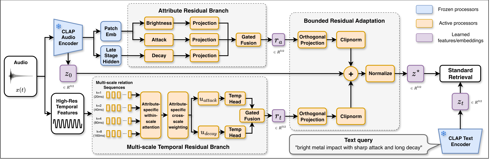
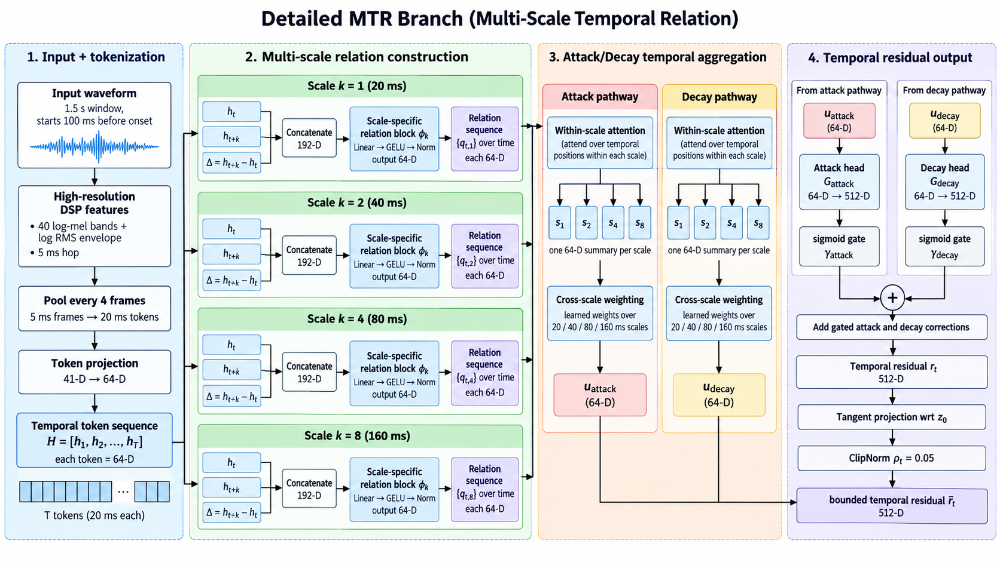

Anonymous submission · under review
ResiCLAP: Semantic-Preserving Residual Enhancement for Fine-Grained Impact Sound Retrieval
CLAP retrieves the right kind of sound, but not the right one. ResiCLAP adds bounded residuals to a frozen CLAP embedding so that fine-grained acoustic and temporal detail becomes searchable — without disturbing the pretrained semantic structure, and without leaving the single-vector retrieval setup.
The problem
A sound designer searching for a “metal impact” gets hundreds of results that are all, correctly, metal impacts. What separates a usable take from an unusable one is finer: how bright it is, how sharp the attack is, how long it rings. These properties are category-relative — a bright metal impact and a bright wooden impact occupy very different absolute spectral ranges — and global audio–language embeddings tend to emphasise between-category separation while under-expressing this within-category variation.
Frozen backbone
Both CLAP encoders stay frozen. Only two small residual branches and their gates are trained.
Bounded residuals
Each residual is projected off the frozen embedding and clipped to a fixed radius, so the output is a bounded rotation of the original vector.
Drop-in retrieval
The output is still one normalised 512-d vector. Cosine search over an unmodified CLAP index works unchanged.
Headline result
| Model | Fine-grained R@1 | Fine-grained nDCG@10 | Clotho R@1 | FSD50K R@1 |
|---|---|---|---|---|
| Frozen CLAP | 0.208 | 0.232 | 0.320 | 0.375 |
| FineLAP | 0.208 | 0.216 | – | – |
| Two-stage property scoring | 0.417 | 0.368 | – | – |
| ResiCLAP (full) | 0.500 | 0.450 | 0.338 | 0.450 |
Fine-grained retrieval: 400 held-out RealImpact test recordings, 24 text queries, mean over three seeds. Broad retrieval: 200 Clotho and 200 FSD50K examples. Broad retrieval is not reported for FineLAP, which modifies the text encoder, nor for two-stage scoring, which keeps the CLAP index and only rescores property queries.
nDCG@10 on fine-grained retrieval rises from 0.232 to 0.450 — a gain of +0.218 (95% CI [0.117, 0.321]) — while Clotho and FSD50K retrieval stay at or above frozen-CLAP levels.
At a glance
Evaluation data
Fine-grained retrieval is evaluated on RealImpact, a set of real recordings of everyday objects struck at controlled points and captured by a dense microphone array. Because every recording carries its object, material, strike point and microphone position, it supports queries that differ only in acoustic detail rather than in category.
Training and test splits are disjoint by object, so no object heard at training time appears at test time. The held-out pool used throughout this site contains 400 recordings of 5 unseen objects — Mug (ceramic), Bin (plastic), Flowerpot (small ceramic), Vase (wood), Spatula (metal) — each struck at 5 points and recorded across 4 microphone distance rings and a range of angles.
Attribute supervision is category-relative: brightness, attack and decay targets are standardised within each material, so “bright” means bright relative to other sounds of that material rather than bright in absolute spectral terms. Semantic retention is measured separately on Clotho and FSD50K, which the model never trains on as a retrieval target.
Method
ResiCLAP treats the frozen CLAP embedding as a fixed semantic anchor and learns only bounded corrections around it.

1. Attribute residual branch
Probing the frozen HTSAT encoder shows that intermediate layers expose fine-grained attributes more strongly than the final global embedding. We read three of them directly:
| Attribute | Source representation | Dimension |
|---|---|---|
| Brightness | patch spectral-band features | 384 |
| Attack | patch onset features | 96 |
| Decay | stage-3 tail features | 768 |
Each is projected to 512-d by a two-layer MLP (hidden width 128, LayerNorm, GELU) and the three projections are merged by a learned sigmoid gated fusion. Every gate is initialised to −2, so each branch starts with a small contribution and has to earn its influence during training.
2. Multi-scale temporal residual branch
CLAP's own frame stride is too coarse for transient detail, so this branch reads the waveform at higher resolution. From a 1.5 s window beginning 100 ms before onset we extract 5 ms log-mel frames plus envelope, spectral-flux and relative-time features, standardise them, downsample to 20 ms steps and project to 64-d states.
Temporal evolution is then modelled explicitly as relations between time steps at four offsets — 20, 40, 80 and 160 ms — so the branch sees both short transients and longer evolution. Attribute-specific attention summarises each scale, and a second attribute-specific weighting combines the four scales.

3. Bounded residual adaptation
This is the part that keeps CLAP intact. Each residual is first projected orthogonally to the frozen embedding, then clipped to a fixed radius:
with ρa = 0.20 for the attribute residual and ρt = 0.05 for the temporal residual. The bounded residuals are added to the anchor and re-normalised:
Because the residuals are orthogonal to z0 and bounded, the enhanced embedding is a rotation of the original by at most about 14°. Our ablation shows it is the magnitude bound, not the orthogonal projection, that does the work of preserving semantic structure — see the trade-off analysis.
4. Training objective
The bound controls how far the embedding may move; the objective decides what the movement should encode. Two groups of terms are combined:
Fine-grained learning
- Prompt classification aligns the enhanced embedding with its material–attribute description.
- Smooth-L1 regression predicts the category-relative attribute value.
- Pairwise ranking preserves the relative ordering between sounds.
Semantic preservation
- Cosine anchor penalises deviation from z0.
- Semantic contrastive keeps audio–text alignment on general audio.
- Symmetric-KL distillation matches the frozen and enhanced audio–text similarity distributions.
Training setup
| Setting | Value |
|---|---|
| Backbone | LAION-CLAP clap-htsat-fused (frozen) |
| Trained parameters | residual branches and gates only |
| Optimiser | AdamW, lr 1e−4, weight decay 1e−4 |
| Gradient clipping | global norm 5.0 |
| Epochs | 100 |
| Alignment temperature | 0.07 |
| Attribute bound ρa | 0.20 |
| Temporal bound ρt | 0.05 |
| Seeds | 7, 17, 27 |